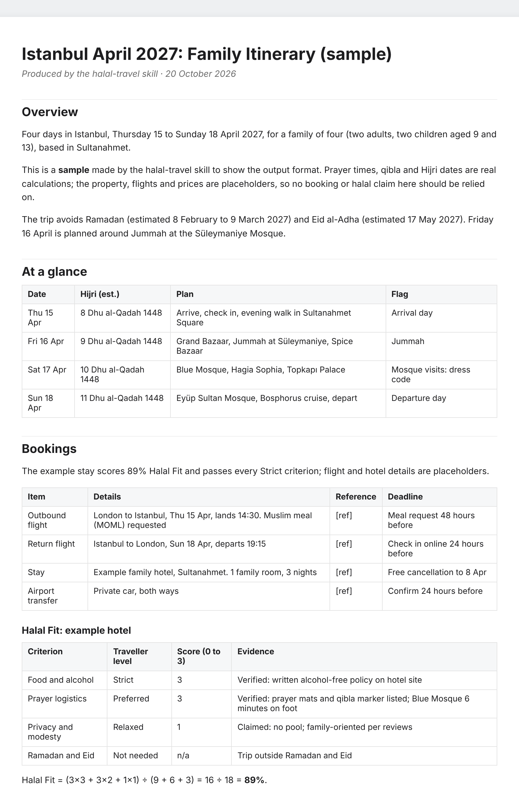
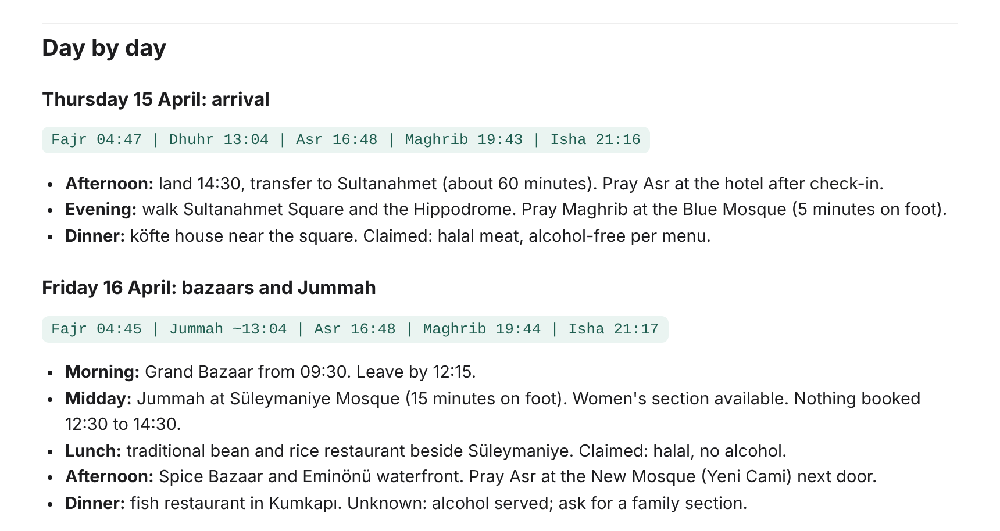
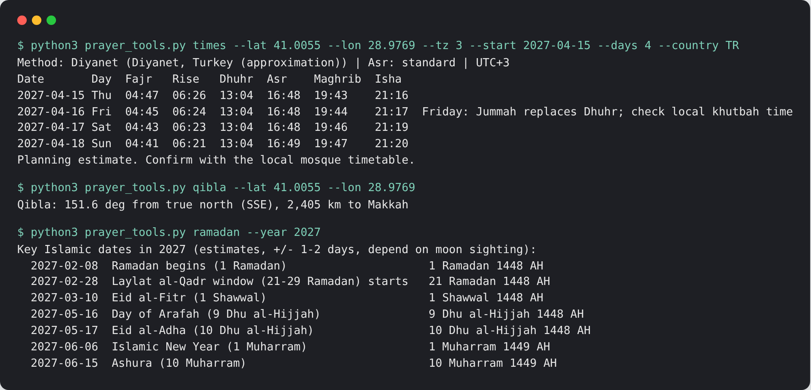

Halal Travel Planner
An open-source Claude skill that plans halal holidays from first idea to day-by-day itinerary, checking every hotel, restaurant and activity against your own standards.
What it checks
Food and alcohol
Halal-certified food, alcohol-free hotels and nearby halal restaurants, each with an evidence label.
Prayer logistics
Offline prayer times in 19 regional methods, qibla bearing, Jummah mosques and airport prayer rooms.
Privacy and modesty
Women-only pools, spas and beaches, private villas and burkini-friendly resorts.
Ramadan and Eid
Flags overlaps, plans around fasting, suhoor and iftar, and finds Eid prayer.
How it works
- Intake: who is travelling, dates, budget, and how strict each criterion should be.
- Calendar check for Ramadan, Eid, Arafah and Hajj season.
- Destination shortlist with live Muslim-friendliness and travel advice checks.
- Properties scored with a Halal Fit Score, labelled Verified, Claimed or Unknown.
- Shortlist with booking links. Browser booking only with your consent, stopping before payment.
- Itinerary as a shareable doc, a day-by-day map and a Word or PDF file.
Example: Istanbul, April 2027
A sample four-day family trip. Prayer times, qibla and Hijri dates are real calculations; the hotel and flights are placeholders.



Install
Claude app: upload the skills/halal-travel folder as a custom skill. Claude Code: add the repo as a plugin, or copy the folder into ~/.claude/skills/.